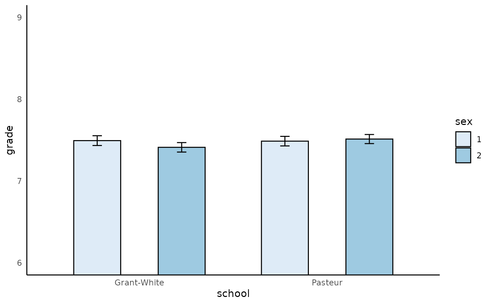

![[Experimental]](figures/lifecycle-experimental.svg)
Plot categorical variable with barplot. Continuous moderator are plotted at ± 1 SD from the mean.
anova_plot(model, predictor = NULL, graph_label_name = NULL)Arguments
- model
fitted model (usually
lmoraovobject). Variables must be converted to correct data type before fitting the model. Specifically, continuous variables must be converted to typenumericand categorical variables to typefactor.- predictor
predictor variable. Must specified for non-interaction plot and must not specify for interaction plot.
- graph_label_name
vector or function. Vector should be passed in the form of
c(response_var, predict_var1, predict_var2, ...). Function should be passed as a switch function that return the label based on the name passed (e.g., a switch function)
Value
a ggplot object
Examples
# Main effect plot with 1 categorical variable
fit_1 = lavaan::HolzingerSwineford1939 %>%
dplyr::mutate(school = as.factor(school)) %>%
lm(data = ., grade ~ school)
anova_plot(fit_1,predictor = school)
#> Joining, by = "school"
# Interaction effect plot with 2 categorical variables
fit_2 = lavaan::HolzingerSwineford1939 %>%
dplyr::mutate(dplyr::across(c(school,sex),as.factor)) %>%
lm(data = ., grade ~ school*sex)
anova_plot(fit_2)
#> Joining, by = c("school", "sex")

# Interaction effect plot with 1 categorical variable and 1 continuous variable
fit_3 = lavaan::HolzingerSwineford1939 %>%
dplyr::mutate(school = as.factor(school)) %>%
dplyr::mutate(ageyr = as.numeric(ageyr)) %>%
lm(data = ., grade ~ ageyr*school)
anova_plot(fit_3)